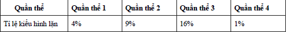

Đề môn Hóa Học số 4
SỞ GIÁO DỤC VÀ ĐÀO TẠO THANH HÓA ĐỀ THI
90
:phút
00
:giây
Ghi Chú
Câu 1:
Ở 1 loài thực vật khi cho cây có kiểu hình quả dẹt (P) lai với cây có kiểu gen đồng hợp lặn thu được đời con có tỉ lệ kiểu hình là: 25% quả dẹt: 50% quả tròn: 25% quả dài. Kết luận nào sau đây không đúng?
A: Tính trạng dạng quả di truyền theo quy luật tương tác bổ sung.
B: Cơ thể đồng hợp lặn đem lai có kiểu hình quả dài.
C: Cây quả dẹt P cho 4 loại giao tử có tỉ lệ bằng nhau.
D: Nếu cho cây P tự thụ phấn thì ở F1 kiểu hình quả tròn chiếm tỉ lệ 18,75%
Câu 2:
Một trong những ưu điểm của phương pháp nuôi cấy mô ở thực vật là
A: nhân nhanh các giống cây trồng quý hiếm, tạo ra các cây đồng nhất về kiểu gen.
B: tạo dòng thuần chủng có kiểu gen khác nhau.
C: tạo các cây con có ưu thế lai cao hơn hẳn so với cây ban đầu.
D: tạo ra giống cây trồng mới có kiểu gen hoàn toàn khác với cây ban đầu.
Câu 3:
Cho các thông tin sau:
(1) Làm thay đổi hàm lượng ADN ở trong nhân tế bào.
(2) Làm thay đổi chiều dài phân tử ADN.
(3) Không làm thay đổi thành phần và số lượng gen trên NST.
(4) Xảy ra ở thực vật mà ít gặp ở động vật.
(5) Làm xuất hiện các gen mới trong quần thể.
Trong 5 đặc điểm nói trên, đột biến lệch bội có bao nhiêu đặc điểm?
A: 3
B: 4
C: 2
D: 5
Câu 4:
Menden đã sử dụng phép lai phân tích trong các thí nghiệm của mình để:
A: Xác định quy luật di truyền chi phối tính trạng.
B: Xác định tính trạng nào là trội, tính trạng nào là lặn.
C: Xác định các cá thể thuần chủng.
D: Kiểm tra giả thuyết nêu ra.
Câu 5:
Trong trường hợp giảm phân và thụ tinh bình thường, một gen quy định một tính trạng và gen trội là trội hoàn toàn. Tính theo lí thuyết, phép lai AaBbDdHh × AaBbDdHh sẽ cho số cá thể mang kiểu gen có 2 cặp đồng hợp trội và 2 cặp dị hợp chiếm tỉ lệ
A: 9/64
B: 3/32
C: 81/256
D: 27/64
Câu 6:
Cây ba nhiễm có kiểu gen AaaBb giảm phân bình thường. Tính theo lí thuyết, tỷ lệ loại giao tử AB được tạo ra từ cơ thể này là:
A: 1/12
B: 1/8
C: 1/4
D: 1/6
Câu 7:
Khi nói về quá trình phát sinh, phát triển của sự sống trên Trái Đất, phát biểu nào sau đây đúng?
A: Tiến hoá tiền sinh học là giai đoạn từ những tế bào đầu tiên hình thành nên các loài sinh vật như ngày nay.
B: Sự xuất hiện phân tử prôtêin và axit nuclêic kết thúc giai đoạn tiến hoá tiền sinh học.
C: Trong giai đoạn tiến hoá hoá học, đã có sự hình thành các đại phân tử hữu cơ từ các chất hữu cơ đơn giản.
D: Các tế bào sơ khai đầu tiên được hình thành vào cuối giai đoạn tiến hoá sinh học.
Câu 8:
Cho các thông tin sau:
(1) Sử dụng enzim cắt giới hạn để cắt gen cần chuyển và mở plasmid.
(2) Tách ADN chứa gen cần chuyển ra khỏi tế bào cho và plasmit ra khỏi tế bào vi khuẩn.
(3) Sử dụng enzim ligaza để nối gen cần chuyển vào plasmit.
(4) Phân lập dòng tế bào chứa ADN tái tổ hợp.
(5) Đưa ADN tái tổ hợp vào tế bào nhận.
(6) Tạo điều kiện để dòng tế bào chứa ADN tái tổ hợp được biểu hiện và thu nhận sản phẩm.
Trình tự các bước trong kĩ thuật cấy gen là:
A: (2) → (1) → (3) → (4) → (5) → (6).
B: (1) → (2) → (3) → (4) → (5) → (6).
C: (2) → (1) → (3) → (5) → (4) → (6).
D: (1) → (2) → (3) → (5) → (4) → (6).
Câu 9:
Dạng đột biến nào sau đây làm thay đổi lôcut của gen trên NST
A: Đột biến gen và đột biến lệch bội.
B: Đột biến lệch bội và đột biến đảo đoạn.
C: Đột biến đa bội hóa và đột biến lệch bội
D: Đột biến chuyển đoạn và đảo đoạn
Câu 10:
Bệnh phêninkêto niệu do
A: thừa enzim chuyển hoá axit amin phêninalanin thành tirôzin trong cơ thể.
B: thiếu enzim chuyển hoá axit amin phêninalanin thành tirôzin trong cơ thể
C: thiếu axit amin phêninalanin trong khi đó thừa tirôzin trong cơ thể.
D: bị rối loạn quá trình lọc axit amin phêninalanin trong tuyến bài tiết.
Câu 11:
Một phân tử mARN có tỉ lệ A : U : G : X = 1 : 2 : 3 : 4, trong đó số nucleotit loại G của mARN này là 390. Số nucleotit loại A của phân tử mARN này là
A: 130
B: 260
C: 300
D: 150
Câu 12:
Kết luận nào sau đây là
không
đúng về di truyền ở người?
A: Con trai nhận giao tử chứa NST X của mẹ và giao tử chứa NST Y của bố.
B: Cả con trai và con gái đều nhận giao tử chứa NST X của mẹ
C: Con gái nhận giao tử chứa NST X của mẹ và giao tử chứa NST X của bố.
D: Chỉ con gái nhận giao tử chứa NST X của mẹ còn con trai thì không.
Câu 13:
Điều hòa hoạt động của gen chính là
A: điều hòa lượng sản phẩm của gen được tạo ra.
B: điều hòa lượng tARN của gen được tạo ra.
C: điều hòa lượng rARN của gen được tạo ra.
D: điều hòa lượng mARN của gen được tạo ra.
Câu 14:
Câu nào trong các câu sau là
không
đúng?
A: Trong quá trình tổng hợp ARN, mạch ARN mới tổng hợp theo chiều 5/à 3/
B: Trong quá trình phiên mã, mạch ARN mới được tạo ra theo chiều từ 3/ à 5/
C: Trong quá trình tổng hợp prôtêin, mARN được dịch mã theo chiều từ 5/à 3/
D: Trong quá trình tổng hợp ARN, mạch gốc ADN được phiên mã theo chiều 3/ à 5/
Câu 15:
Quần xã ở rừng mưa nhiệt đới có đặc điểm là
A: các loài có ổ sinh thái hẹp và độ đa dạng của quần xã cao
B: các loài có ổ sinh thái hẹp và độ đa dạng của quần xã thấp
C: các loài có ổ sinh thái rộng và độ đa dạng của quần xã thấp.
D: các loài có ổ sinh thái rộng và độ đa dạng của quần xã cao
Câu 16:
Ở một loài động vật ngẫu phối, xét một gen có hai alen, alen A trội hoàn toàn so với alen Có bốn quần thể thuộc loài này đều đang ở trạng thái cân bằng di truyền về gen trên và có tỉ lệ kiểu hình lặn như sau:

Trong các quần thể trên, quần thể nào có tần số kiểu gen dị hợp tử cao nhất?
A: Quần thể 4.
B: Quần thể 1.
C: Quần thể 3.
D: Quần thể 2.
Câu 17:
Chọn lọc tự nhiên làm thay đổi tần số alen của quần thể vi khuẩn nhanh hơn so với quần thể lưỡng bội, nguyên nhân là do:
A: Vi khuẩn có số lượng gen ít hơn sinh vật nhân thực.
B: Vi khuẩn dễ bị kháng sinh tiêu diệt
C: Vi khuẩn có kích thước nhỏ, cấu trúc đơn giản
D: Vi khuẩn có bộ NST đơn bội và sinh sản nhanh.
Câu 18:
Xét các phát biểu sau:
(1) Quá trình nhân đôi không theo nguyên tắc bổ sung thì sẽ dẫn tới phát sinh đột biến gen
(2) Đột biến gen trội ở dạng dị hợp cũng được gọi là thể đột biến.
(3) Đột biến gen chỉ được phát sinh khi môi trường có tác nhân đột biến.
(4) Đột biến gen được phát sinh ở pha S của chu kì tế bào.
(5) Đột biến gen là loại biến dị luôn được di truyền cho thế hệ sau.
Có bao nhiêu phát biểu đúng?
A: 1
B: 2
C: 3
D: 4
Câu 19:
Cho các bước sau:
(1) Tạo ra các cây có cùng một kiểu gen.
(2) Tập hợp các kiểu hình thu được từ những cây có cùng kiểu gen.
(3) Trồng các cây có cùng kiểu gen trong những điều kiện môi trường khác nhau.
Để xác định mức phản ứng của một kiểu gen ở thực vật cần tiến hành các bước lần lượt như sau:
A: (2) và (1) và (3)
B: (1) và (2) và (3)
C: (3) và (1) và (2)
D: (1) và (3) và (2)
Câu 20:
Để tạo giống cây trồng có kiểu gen đồng hợp tử về tất cả các cặp gen, người ta sử dụng phương pháp nào sau đây?
A: Lai khác dòng
B: Lai tế bào xôma khác loài
C: Nuôi cấy hạt phấn sau đó lưỡng bội hóa
D: Công nghệ gen
Câu 21:
Khi nói về cơ chế dịch mã ở sinh vật nhân thực, nhận định nào sau đây không đúng?
A: Khi dịch mã, ribôxôm chuyển dịch theo chiều 5'→3' trên phân tử mARN.
B: Trong cùng một thời điểm có thể có nhiều ribôxôm tham gia dịch mã trên một phân tử mARN
C: Khi dịch mã, ribôxôm chuyển dịch theo chiều 3'→5' trên phân tử mARN.
D: Axit amin mở đầu trong quá trình dịch mã là mêtiônin.
Câu 22:
Cho biết mỗi gen quy định một tính trạng và gen trội hoàn toàn. Ở đời con của phép lai AaBBDd × AaBbdd có tỉ lệ kiểu gen, tỉ lệ kiểu hình lần lượt là
A: 2 : 2 : 2 : 2 : 1 : 1 : 1 : 1 và 3 : 3 : 1 : 1.
B: 2 : 2 : 1 : 1 : 1 : 1 : 1 : 1 và 3 : 3 : 1 : 1.
C: 2 : 2 : 2 : 2 : 1 : 1 : 1 : 1 : 1 : 1 : 1 : 1 và 3 : 3 : 1 : 1.
D: 2 : 2 : 1 : 1 : 1 : 1 : 1 : 1 và 9 : 3 : 3 : 1.
Câu 23:
Bản chất của quy luật phân li theo Menđen là
A: Sự phân li đồng đều của các nhân tố di truyền trong mỗi cặp nhân tố di truyền.
B: Sự phân li đồng đều các alen của từng cặp alen năm trên các cặp nhiễm sắc thể tương đồng khác nhau.
C: Sự phân li độc lập của các cặp nhân tố di truyền, giảm phân diễn ra bình thường trong quá trình hình thành giao tử.
D: Thế hệ P thuần chủng, tính trạng trội phải trội hoàn toàn, số lượng cá thể phân tích phải đủ lớn.
Câu 24:
Cho biết gen A : thân cao; gen a : thân thấp. Các cơ thể đem lai đều giảm phân bình thường. Phép lai có tỷ lệ kiểu hình 11 cao : 1 thấp là :
A: AAAa x AAA
B: AAaa x Aa
C: AA x AAaa
D: AAaa x AAaa
Câu 25:
Theo quan niệm của Đacuyn, nguồn nguyên chủ yếu của quá trình tiến hóa là
A: đột biến cấu trúc nhiễm sắc thể
B: đột biến gen
C: biến dị cá thể
D: đột biến số lượng nhiễm sắc thể
Câu 26:
Ba tế bào sinh tinh có kiểu gen AaBbEe tiến hành giảm phân bình thường để tạo tinh trùng, theo lí thuyết số loại tinh trùng tối đa có thể tạo ra là bao nhiêu?
A: 16
B: 8
C: 6
D: 2
Câu 27:
Các ví dụ nào sau đây thuộc cơ chế cách li trước hợp tử?
(1) Ngựa cái giao phối với lừa đực sinh ra con la không có khả năng sinh sản.
(2) Cây thuộc loài này thường không thụ phấn được cho cây thuộc loài khác.
(3) Trứng nhái thụ tinh với tinh trùng cóc tạo ra hợp tử nhưng hợp tử không phát triển.
(4) Các loài ruồi giấm khác nhau có tập tính giao phối khác nhau.
Đáp án đúng là:
A: (2), (4)
B: (1), (3)
C: (1), (4)
D: (2), (3)
Câu 28:
Quá trình nào sau đây sẽ tạo ra các alen mới?
A: Đột biến cấu trúc NST
B: Đột biến gen
C: Đột biến số lượng NST
D: Hoán vị gen
Câu 29:
Một gen có 1824 liên kết hiđrô. Trên mạch 1 của gen có T = A; X = 2T ; G= 3A. Gen bị đột biến điểm làm giảm 1 liên kết hiđrô. Số nuclêôtit loại A của gen đột biến là
A: 193
B: 191
C: 97
D: 95
Câu 30:
Ở một loài cỏ, quần thể ở phía trong bờ sông ra hoa kết hạt đúng vào mùa lũ về, quần thể ở bãi bồi ven sông ra hoa kết hạt trước mùa lũ về nên không giao phấn được với nhau. Đây là ví dụ về
A: cách li thời gian
B: cách li tập tính
C: cách li cơ học
D: cách li nơi ở
Câu 31:
Cho các dạng đột biến
1. Đột biến mất đoạn
2. Đột biến lặp đoạn
3. Đột biến đảo đoạn.
4. Đột biến chuyển đoạn trong một NST
5. Đột biến chuyển đoạn tương hỗ
Hãy chọn kết luận đúng
A: Đột biến không làm thay đổi thành phần và số lượng gen của NST là: 1, 3, 4
B: Loại đột không làm thay đổi hàm lượng ADN trong nhân của tế bào là: 3, 4
C: Đột biến được sử dụng để chuyển gen từ NST này sang NST khác là: 2, 4, 5
D: Loại đột biến để xác định vị trí gen trên NST là: 1, 4
Câu 32
Ở người, màu da do 3 cặp gen tương tác cộng gộp: thể đồng hợp toàn trội cho da đen, thể đồng hợp lặn cho da trắng, thể dị hợp cho màu da nâu. Bố và mẹ da nâu đều có kiểu gen AaBbCc thì xác suất sinh con da nâu là:
A: 1/128
B: 1/64
C: 62/64
D: 1/256
Câu 33:
Khi nói về đột biến cấu trúc NST, kết luận nào sau đây là đúng?
A: Mất một đoạn NST ở các vị trí khác nhau trên cùng một NST đều biểu hiện kiểu hình giống nhau.
B: Mất một đoạn NST có độ dài giống nhau ở các NST khác nhau đều biểu hiện kiểu hình giống nhau.
C: Mất một đoạn NST có độ dài khác nhau ở cùng vị trí trên một NST biểu hiện kiểu hình giống nhau.
D: Các đột biến mất đoạn NST ở các vị trí khác nhau biểu hiện kiểu hình khác nhau.
Câu 34:
Ở cà độc dược (2n = 24), người ta đã phát hiện được các dạng thể ba ở cả 12 cặp nhiễm sắc thể. Các thể ba này
A: có số lượng nhiễm sắc thể trong tế bào xôma giống nhau và có kiểu hình khác nhau.
B: có số lượng nhiễm sắc thể trong tế bào xôma khác nhau và có kiểu hình giống nhau.
C: có số lượng nhiễm sắc thể trong tế bào xôma giống nhau và có kiểu hình giống nhau.
D: có số lượng nhiễm sắc thể trong tế bào xôma khác nhau và có kiểu hình khác nhau.
Câu 35:
Alen B dài 221 nm và có 1669 liên kết hiđrô, alen B bị đột biến thành alen b. Từ một tế bào chứa cặp gen Bb qua hai lần nguyên phân bình thường, môi trường nội bào đã cung cấp cho quá trình nhân đôi của cặp gen này 1689 nuclêôtit loại timin và 2211 nuclêôtit loại xitôzin. Dạng đột biến đã xảy ra với alen B là
A: thay thế một cặp A-T bằng một cặp G-X
B: mất một cặp A-T
C: mất một cặp G-X
D: thay thế một cặp G-X bằng một cặp A-T.
Câu 36:
Cho biết mỗi gen quy định 1 tính trạng, trội lặn hoàn toàn, không xảy ra đột biến. Cho phép lai: ♀ AaBbddEe x ♂ AabbDdEE, đời con có thể có bao nhiêu loại kiểu gen và bao nhiêu loại kiểu hình?
A: 24 kiểu gen và 8 kiểu hình
B: 27 kiểu gen và 16 kiểu hình
C: 24 kiểu gen và 16 kiểu hình
D: 16 kiểu gen và 8 kiểu hình
Câu 37:
Đặc điểm nào sau đây là chung cho hiện tượng di truyền phân li độc lập và hoán vị gen?
A: Tạo điều kiện cho những gen quy định tính trạng tốt có thể tái tổ hợp tạo thành nhóm gen liên kết mới.
B: Làm xuất hiện của biến dị tổ hợp.
C: Đảm bảo sự di truyền bền vững của từng nhóm tính trạng.
D: Các gen phân li độc lập và tổ hợp tự do.
Câu 38:
Cho biết mỗi cặp gen quy định một cặp tính trạng và alen trội là hoàn toàn. Ở đời con của phép lai AaBbDdEe × AabbddEe loại cá thể có kiểu hình mang ít nhất một tính trạng trội chiếm tỉ lệ
A: 63/64
B: 255/256
C: 15/64
D: 1/64
Câu 39:
Ở người, bệnh P do một alen lặn nằm trên nhiễm sắc thể thường quy định, alen trội tương ứng quy định không bị bệnh. Một người phụ nữ có em trai bị bệnh P lấy một người chồng có ông nội và bà ngoại đều bị bệnh P. Biết rằng không phát sinh đột biến mới và trong cả hai gia đình trên không còn ai khác bị bệnh này. Xác suất sinh con đầu lòng bị bệnh P của cặp vợ chồng này là
A: 1/3
B: 1/9
C: 8/9
D: 3/4
Câu 40:
Thành tựu nào sau đây là ứng dụng của công nghệ tế bào?
A: Tạo ra giống lúa “gạo vàng” có khả năng tổng hợp β – carôten (tiền chất tạo vitamin A) trong hạt.
B: Tạo ra giống cừu sản sinh prôtêin huyết thanh của người.
C: Tạo ra giống cà chua có gen làm chín quả bị bất hoạt.
D: Tạo ra giống cây trồng lưỡng bội có kiểu gen đồng hợp tử về tất cả các gen.
Câu 41:
Ở người, yếu tố có thể được xem là một nguyên nhân góp phần làm tăng xuất hiện bệnh di truyền ở trẻ được sinh ra là
A: trứng chậm thụ tinh sau khi rụng
B: người mẹ sinh con ở tuổi cao (ngoài 35 tuổi).
C: trẻ suy dinh dưỡng sau khi sinh
D: cả ba yếu tố trên
Câu 42:
Trong trường hợp không xảy ra đột biến, các thể tứ bội giảm phân tạo giao tử 2n có khả năng thụ tinh. Theo lý thuyết, những phép lai nào sau đây cho đời con có 4 loại kiểu gen? (1). AAaa × AAAa
(2) Aaaa × Aaaa
(3) AAaa × Aaaa
(4) Aaaa × Aa
(5) AAaa × Aa
(6) AAAa × Aa
Đáp án đúng là:
A: (1), (3), (4)
B: (1), (3), (5)
C: (3), (4), (5)
D: (1), (3), (5), (6)
Câu 43:
Ở cấp độ phân tử, thông tin di truyền được truyền từ tế bào mẹ sang tế bào con nhờ cơ chế.
A: nhân đôi ADN
B: dịch mã
C: phiên mã
D: giảm phân và thụ tinh.
Câu 44:
Nhân tố tiến hóa nào sau đây chỉ làm thay đổi thành phần kiểu gen, không làm thay đổi tần số alen của quần thể?
A: Giao phối ngẫu nhiên
B: Giao phối không ngẫu nhiên
C: Các yếu tố ngẫu nhiên
D: Đột biến
Câu 45:
Thế hệ xuất phát của một quần thể tự thụ phấn có tỉ lệ kiểu gen là 0,1AA : 0,4Aa : 0,5aa. Theo lí thuyết, ở thế hệ F3 loại kiểu gen aa chiếm tỉ lệ
A: 60%
B: 65%
C: 67,5%
D: 50%
Câu 46:
Do đột biến lệch bội, ở người có dạng XXY. Bệnh mù màu do đột biến gen lặn m trên NST X. Một người phụ nữ bị mù màu, kết hôn với người chồng mắt bình thường. Họ sinh được một con trai XXY nhưng không bị mù màu. Điều giải thích nào sau đây là đúng ?
A: Con trai đó có kiểu gen XMXMY và bị lệch bội do mẹ
B: Con trai đó có kiểu gen XMXmY và bị lệch bội do mẹ
C: Con trai đó có kiểu gen XMXMY và bị lệch bội do bố
D: Con trai đó có kiểu gen XMXmY và bị lệch bội do bố
Câu 47:
Nhận định nào sau đây là không đúng?
A: Có 61 bộ ba mã hóa axit amin
B: Mã di truyền có tính phổ biến
C: Mã di truyền có tính thoái hoá
D: Bộ ba mở đầu ở hầu hết các sinh vật là AUG
Câu 48:
Cho phép lai P: ♀ ♂ AaBbDd. Trong quá trình giảm phân hình thành giao tử đực, ở một số tế bào, cặp nhiễm sắc thể mang cặp gen Aa không phân li trong giảm phân I; giảm phân II diễn ra bình thường. Quá trình giảm phân hình thành giao tử cái diễn ra bình thường. Theo lí thuyết, phép lai trên tạo ra F1 có tối đa bao nhiêu loại kiểu gen?
A: 24
B: 63
C: 42
D: 56
Câu 49:
Ở một loài thực vật, alen A quy định quả ngọt trội hoàn toàn so với alen a quy định quả chua; alen B quy định hoa đỏ trội hoàn toàn so với alen b quy định hoa trắng; hai cặp gen này nằm trên hai cặp NST thường. Thực hiện phép lai giữa hai cây P: AaBB x aabb, thu được các cây F1, tứ bội hoá thành công các cây F1 bằng dung dịch Cônsixin. Chọn một trong các cây F1 đã được tứ bội hoá cho tự thụ phấn. Tỷ lệ phân li kiểu hình ở F2 là
A: 105:35:35:1 hoặc 35:1
B: 1225:35:35:1 hoặc 35:1
C: 9:3:3:1 hoặc 35:1
D: 105:35:35:1 hoặc 9:3:3:1
Câu 50:
Khi nói về chọn lọc tự nhiên, điều nào sau đây không đúng?
A: Chọn lọc tự nhiên là nhân tố quy định chiều hướng thay đổi tần số alen của quần thể.
B: Chọn lọc tự nhiên không thể loại bỏ hoàn toàn alen lặn ra khỏi quần thể.
C: Hầu hết alen lặn là có hại nên chọn lọc tự nhiên chống lại alen lặn làm thay đổi tần số alen nhanh hơn chống lại alen trội
D: Chọn lọc tự nhiên tác động trực tiếp lên kiểu hình chứ không tác động trực tiếp lên kiểu gen.
Correct answers: